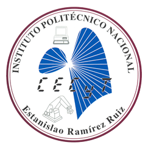

INDICE
- Página de Listas
- Página del IPN
- Instituto Politecnico Nacional
- Mision y Vision
- Identidad Politecnica
 Instituto Politécnico Nacional
Institución educativa del Estado creada para consolidar, a través de la educación, la Independencia Económica, Científica, Tecnológica, Cultural y Política para alcanzar el progreso social de la Nación, de acuerdo con los objetivos Históricos de la Revolución Mexicana, contenidos en la Constitución Política de los Estados Unidos Mexicanos.
Misión y Visión
Misión Institucional
El Instituto Politécnico Nacional contribuye al desarrollo económico y social de la nación, a través de la formación integral de personas competentes; de la investigación, el desarrollo tecnológico y la innovación. Además tiene reconocimiento internacional por su calidad e impacto social.
Visión
Institución educativa incluyente de prestigio internacional, que con su comunidad contribuye al desarrollo científico, tecnológico e innovación con impacto
Identidad Politécnica
Escudo
Fueron las inquietudes estudiantiles quienes tomaron la iniciativa para crear los símbolos que identificaran a la naciente institución politécnica. En los años 1944-1945 la Federación Nacional de Estudiantes Técnicos (FNET) lanzó una convocatoria para diseñar un escudo representativo de las escuelas que integraban el IPN. El primer lugar fue otorgado al alumno Armando López Fonseca quien con ayuda de su compañero Jorge Grajales, lograron que su diseño fuera el ganador. El escudo fue modificado en 1948 conservando sus elementos originales
Lema: "La Técnica al Servicio de la Patria"
El lema era utilizado por algunos estudiantes desde antes de la creación del IPN, pero fue durante el Primer Congreso Nacional de Estudiantes Técnicos, realizado en la ciudad de Chihuahua en 1937, donde el estudiante Jesús Robles propuso utilizar la frase La Técnica al Servicio de una Patria Mejor. Años más tarde este lema fue modificado por “La Técnica al Servicio de la Patria”, el cual expresa los ideales del Politécnico.
Himno
Para obtener el Himno se convocó a un concurso abierto para su creación, pero no hubo eco al llamado. Luego de dos nuevas convocatorias, la poetisa Carmen de la Fuente resultó triunfadora del certamen y la Dirección General del Instituto le premió, el 15 de julio de 1961. Posteriormente, como la música aún no estaba elegida, se convocó a un certamen para poner música a la letra del himno del IPN, y resultó triunfador Armando González Domínguez, pianista reconocido y director de varias orquestas.